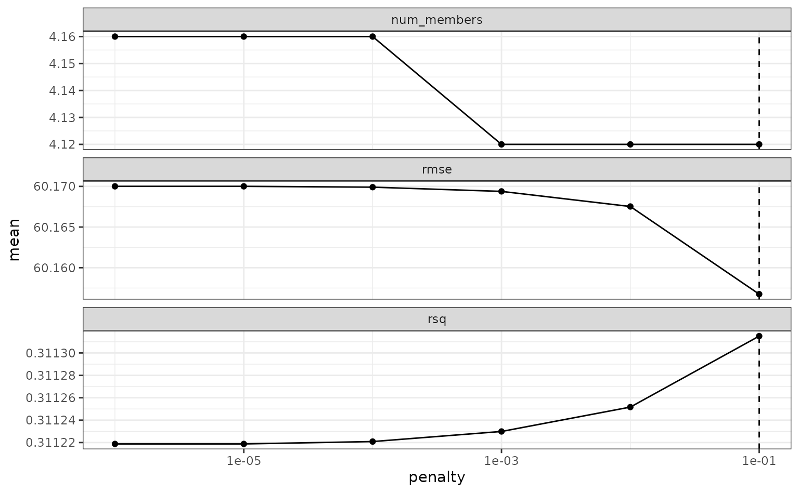
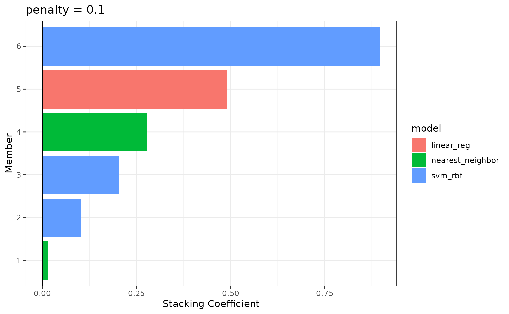
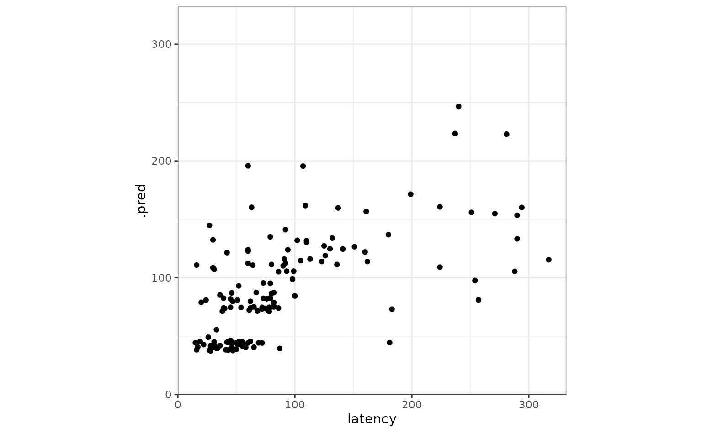

In this article, we’ll be working through an example of the workflow of model stacking with the stacks package. At a high level, the workflow looks something like this:
- Define candidate ensemble members using functionality from rsample, parsnip, workflows, recipes, and tune
- Initialize a
data_stackobject withstacks()
- Iteratively add candidate ensemble members to the
data_stackwithadd_candidates()
- Evaluate how to combine their predictions with
blend_predictions()
- Fit candidate ensemble members with non-zero stacking coefficients
with
fit_members()
- Predict on new data with
predict()!
The package is closely integrated with the rest of the functionality in tidymodels—we’ll load those packages as well, in addition to some tidyverse packages to evaluate our results later on.
In this example, we’ll make use of the tree_frogs data
exported with stacks, giving experimental results on
hatching behavior of red-eyed tree frog embryos!
Red-eyed tree frog (RETF) embryos can hatch earlier than their normal 7ish days if they detect potential predator threat. Researchers wanted to determine how, and when, these tree frog embryos were able to detect stimulus from their environment. To do so, they subjected the embryos at varying developmental stages to “predator stimulus” by jiggling the embryos with a blunt probe. Beforehand, though some of the embryos were treated with gentamicin, a compound that knocks out their lateral line (a sensory organ.) Researcher Julie Jung and her crew found that these factors inform whether an embryo hatches prematurely or not!
We’ll start out with predicting latency (i.e. time to
hatch) based on other attributes. We’ll need to filter out NAs
(i.e. cases where the embryo did not hatch) first.
data("tree_frogs")
# subset the data
tree_frogs <- tree_frogs %>%
filter(!is.na(latency)) %>%
select(-c(clutch, hatched))Taking a quick look at the data, it seems like the hatch time is pretty closely related to some of our predictors!
theme_set(theme_bw())
ggplot(tree_frogs) +
aes(x = age, y = latency, color = treatment) +
geom_point() +
labs(x = "Embryo Age (s)", y = "Time to Hatch (s)", col = "Treatment") Let’s give this a go!
Let’s give this a go!
Define candidate ensemble members
At the highest level, ensembles are formed from model
definitions. In this package, model definitions are an instance of
a minimal workflow,
containing a model specification (as defined in the parsnip package)
and, optionally, a preprocessor (as defined in the recipes
package). Model definitions specify the form of candidate ensemble
members.

Defining the constituent model definitions is undoubtedly the longest
part of building an ensemble with stacks. If you’re
familiar with tidymodels “proper,” you’re probably fine to skip this
section, keeping a few things in mind:
- You’ll need to save the assessment set predictions and workflow
utilized in your
tune_grid(),tune_bayes(), orfit_resamples()objects by setting thecontrolargumentssave_pred = TRUEandsave_workflow = TRUE. Note the use of thecontrol_stack_*()convenience functions below! - Each model definition must share the same rsample
rsetobject.
We’ll first start out with splitting up the training data, generating resamples, and setting some options that will be used by each model definition.
# some setup: resampling and a basic recipe
set.seed(1)
tree_frogs_split <- initial_split(tree_frogs)
tree_frogs_train <- training(tree_frogs_split)
tree_frogs_test <- testing(tree_frogs_split)
set.seed(1)
folds <- rsample::vfold_cv(tree_frogs_train, v = 5)
tree_frogs_rec <-
recipe(latency ~ ., data = tree_frogs_train)
metric <- metric_set(rmse)Tuning and fitting results for use in ensembles need to be fitted
with the control arguments save_pred = TRUE and
save_workflow = TRUE—these settings ensure that the
assessment set predictions, as well as the workflow used to fit the
resamples, are stored in the resulting object. For convenience, stacks
supplies some control_stack_*() functions to generate the
appropriate objects for you.
In this example, we’ll be working with tune_grid() and
fit_resamples() from the tune package, so we will use the
following control settings:
ctrl_grid <- control_stack_grid()
ctrl_res <- control_stack_resamples()We’ll define three different model definitions to try to predict time to hatch—a K-nearest neighbors model (with hyperparameters to tune), a linear model, and a support vector machine model (again, with hyperparameters to tune).
Starting out with K-nearest neighbors, we begin by creating a
parsnip model specification:
# create a model definition
knn_spec <-
nearest_neighbor(
mode = "regression",
neighbors = tune("k")
) %>%
set_engine("kknn")
knn_spec
#> K-Nearest Neighbor Model Specification (regression)
#>
#> Main Arguments:
#> neighbors = tune("k")
#>
#> Computational engine: kknnNote that, since we are tuning over several possible numbers of
neighbors, this model specification defines multiple model
configurations. The specific form of those configurations will be
determined when specifying the grid search in
tune_grid().
From here, we extend the basic recipe defined earlier to fully specify the form of the design matrix for use in a K-nearest neighbors model:
# extend the recipe
knn_rec <-
tree_frogs_rec %>%
step_dummy(all_nominal_predictors()) %>%
step_zv(all_predictors()) %>%
step_impute_mean(all_numeric_predictors()) %>%
step_normalize(all_numeric_predictors())
knn_rec
#>
#> ── Recipe ────────────────────────────────────────────────────────────────
#>
#> ── Inputs
#> Number of variables by role
#> outcome: 1
#> predictor: 4
#>
#> ── Operations
#> • Dummy variables from: all_nominal_predictors()
#> • Zero variance filter on: all_predictors()
#> • Mean imputation for: all_numeric_predictors()
#> • Centering and scaling for: all_numeric_predictors()Starting with the basic recipe, we convert categorical variables to dummy variables, remove column with only one observation, impute missing values in numeric variables using the mean, and normalize numeric predictors. Pre-processing instructions for the remaining models are defined similarly.
Now, we combine the model specification and pre-processing
instructions defined above to form a workflow object:
# add both to a workflow
knn_wflow <-
workflow() %>%
add_model(knn_spec) %>%
add_recipe(knn_rec)
knn_wflow
#> ══ Workflow ══════════════════════════════════════════════════════════════
#> Preprocessor: Recipe
#> Model: nearest_neighbor()
#>
#> ── Preprocessor ──────────────────────────────────────────────────────────
#> 4 Recipe Steps
#>
#> • step_dummy()
#> • step_zv()
#> • step_impute_mean()
#> • step_normalize()
#>
#> ── Model ─────────────────────────────────────────────────────────────────
#> K-Nearest Neighbor Model Specification (regression)
#>
#> Main Arguments:
#> neighbors = tune("k")
#>
#> Computational engine: kknnFinally, we can make use of the workflow, training set resamples,
metric set, and control object to tune our hyperparameters. Using the
grid argument, we specify that we would like to optimize
over four possible values of k using a grid search.
# tune k and fit to the 5-fold cv
set.seed(2020)
knn_res <-
tune_grid(
knn_wflow,
resamples = folds,
metrics = metric,
grid = 4,
control = ctrl_grid
)
knn_res
#> # Tuning results
#> # 5-fold cross-validation
#> # A tibble: 5 × 5
#> splits id .metrics .notes .predictions
#> <list> <chr> <list> <list> <list>
#> 1 <split [343/86]> Fold1 <tibble [4 × 5]> <tibble [0 × 3]> <tibble>
#> 2 <split [343/86]> Fold2 <tibble [4 × 5]> <tibble [0 × 3]> <tibble>
#> 3 <split [343/86]> Fold3 <tibble [4 × 5]> <tibble [0 × 3]> <tibble>
#> 4 <split [343/86]> Fold4 <tibble [4 × 5]> <tibble [0 × 3]> <tibble>
#> 5 <split [344/85]> Fold5 <tibble [4 × 5]> <tibble [0 × 3]> <tibble>This knn_res object fully specifies the candidate
members, and is ready to be included in a stacks
workflow.
Now, specifying the linear model, note that we are not optimizing
over any hyperparameters. Thus, we use the fit_resamples()
function rather than tune_grid() or
tune_bayes() when fitting to our resamples.
# create a model definition
lin_reg_spec <-
linear_reg() %>%
set_engine("lm")
# extend the recipe
lin_reg_rec <-
tree_frogs_rec %>%
step_dummy(all_nominal_predictors()) %>%
step_zv(all_predictors())
# add both to a workflow
lin_reg_wflow <-
workflow() %>%
add_model(lin_reg_spec) %>%
add_recipe(lin_reg_rec)
# fit to the 5-fold cv
set.seed(2020)
lin_reg_res <-
fit_resamples(
lin_reg_wflow,
resamples = folds,
metrics = metric,
control = ctrl_res
)
lin_reg_res
#> # Resampling results
#> # 5-fold cross-validation
#> # A tibble: 5 × 5
#> splits id .metrics .notes .predictions
#> <list> <chr> <list> <list> <list>
#> 1 <split [343/86]> Fold1 <tibble [1 × 4]> <tibble [0 × 3]> <tibble>
#> 2 <split [343/86]> Fold2 <tibble [1 × 4]> <tibble [0 × 3]> <tibble>
#> 3 <split [343/86]> Fold3 <tibble [1 × 4]> <tibble [0 × 3]> <tibble>
#> 4 <split [343/86]> Fold4 <tibble [1 × 4]> <tibble [0 × 3]> <tibble>
#> 5 <split [344/85]> Fold5 <tibble [1 × 4]> <tibble [0 × 3]> <tibble>Finally, putting together the model definition for the support vector machine:
# create a model definition
svm_spec <-
svm_rbf(
cost = tune("cost"),
rbf_sigma = tune("sigma")
) %>%
set_engine("kernlab") %>%
set_mode("regression")
# extend the recipe
svm_rec <-
tree_frogs_rec %>%
step_dummy(all_nominal_predictors()) %>%
step_zv(all_predictors()) %>%
step_impute_mean(all_numeric_predictors()) %>%
step_corr(all_predictors()) %>%
step_normalize(all_numeric_predictors())
# add both to a workflow
svm_wflow <-
workflow() %>%
add_model(svm_spec) %>%
add_recipe(svm_rec)
# tune cost and sigma and fit to the 5-fold cv
set.seed(2020)
svm_res <-
tune_grid(
svm_wflow,
resamples = folds,
grid = 6,
metrics = metric,
control = ctrl_grid
)
svm_res
#> # Tuning results
#> # 5-fold cross-validation
#> # A tibble: 5 × 5
#> splits id .metrics .notes .predictions
#> <list> <chr> <list> <list> <list>
#> 1 <split [343/86]> Fold1 <tibble [6 × 6]> <tibble [0 × 3]> <tibble>
#> 2 <split [343/86]> Fold2 <tibble [6 × 6]> <tibble [0 × 3]> <tibble>
#> 3 <split [343/86]> Fold3 <tibble [6 × 6]> <tibble [0 × 3]> <tibble>
#> 4 <split [343/86]> Fold4 <tibble [6 × 6]> <tibble [0 × 3]> <tibble>
#> 5 <split [344/85]> Fold5 <tibble [6 × 6]> <tibble [0 × 3]> <tibble>Altogether, we’ve created three model definitions, where the K-nearest neighbors model definition specifies 4 model configurations, the linear regression specifies 1, and the support vector machine specifies 6.

With these three model definitions fully specified, we are ready to begin stacking these model configurations. (Note that, in most applied settings, one would likely specify many more than 11 candidate members.)
Putting together a stack
The first step to building an ensemble with stacks is to create a
data_stack object—in this package, data stacks are tibbles
(with some extra attributes) that contain the assessment set predictions
for each candidate ensemble member.

We can initialize a data stack using the stacks()
function.
stacks()
#> # A data stack with 0 model definitions and 0 candidate members.The stacks() function works sort of like the
ggplot() constructor from ggplot2—the function creates a
basic structure that the object will be built on top of—except you’ll
pipe the outputs rather than adding them with +.
The add_candidates() function adds ensemble members to
the stack.
tree_frogs_data_st <-
stacks() %>%
add_candidates(knn_res) %>%
add_candidates(lin_reg_res) %>%
add_candidates(svm_res)
tree_frogs_data_st
#> # A data stack with 3 model definitions and 11 candidate members:
#> # knn_res: 4 model configurations
#> # lin_reg_res: 1 model configuration
#> # svm_res: 6 model configurations
#> # Outcome: latency (numeric)As mentioned before, under the hood, a data_stack object
is really just a tibble with some extra attributes. Checking out the
actual data:
as_tibble(tree_frogs_data_st)
#> # A tibble: 429 × 12
#> latency knn_res_1_1 knn_res_1_2 knn_res_1_3 knn_res_1_4 lin_reg_res_1_1
#> <dbl> <dbl> <dbl> <dbl> <dbl> <dbl>
#> 1 142 76.5 67.8 83.2 83.0 114.
#> 2 79 74.3 71.0 64.2 63.9 78.6
#> 3 50 75.0 71.4 64.9 64.3 81.5
#> 4 68 47.9 49.7 54.0 54.0 78.6
#> 5 64 60.9 53.1 48.4 48.3 36.5
#> 6 52 207. 168. 129. 124. 124.
#> 7 39 22.6 24.9 31.0 31.5 35.2
#> 8 46 23.2 26.6 33.4 33.9 37.1
#> 9 137 75.9 78.8 90.4 90.6 78.8
#> 10 73 67.7 73.6 67.9 67.4 38.8
#> # ℹ 419 more rows
#> # ℹ 6 more variables: svm_res_1_1 <dbl>, svm_res_1_4 <dbl>,
#> # svm_res_1_3 <dbl>, svm_res_1_5 <dbl>, svm_res_1_2 <dbl>,
#> # svm_res_1_6 <dbl>The first column gives the first response value, and the remaining columns give the assessment set predictions for each ensemble member. Since we’re in the regression case, there’s only one column per ensemble member. In classification settings, there are as many columns as there are levels of the outcome variable per candidate ensemble member.
That’s it! We’re now ready to evaluate how it is that we need to combine predictions from each candidate ensemble member.
Fit the stack
The outputs from each of these candidate ensemble members are highly
correlated, so the blend_predictions() function performs
regularization to figure out how we can combine the outputs from the
stack members to come up with a final prediction.
tree_frogs_model_st <-
tree_frogs_data_st %>%
blend_predictions()The blend_predictions function determines how member
model output will ultimately be combined in the final prediction by
fitting a LASSO model on the data stack, predicting the true assessment
set outcome using the predictions from each of the candidate members.
Candidates with nonzero stacking coefficients become members.

To make sure that we have the right trade-off between minimizing the
number of members and optimizing performance, we can use the
autoplot() method:
autoplot(tree_frogs_model_st)
To show the relationship more directly:
autoplot(tree_frogs_model_st, type = "members")![A ggplot line plot. The x axis shows the degree of penalization, ranging from 1e-06 to 1e-01, and the y axis displays the mean of three different metrics. The plots are faceted by metric type, with three facets: number of members, root mean squared error, and R squared. The plots generally show that, as penalization increases, the error decreases. There are very few proposed members in this example, so penalization doesn't drive down the number of members much at all. In this case, then, a larger penalty is acceptable.](basics_files/figure-html/members-plot-1.png)
If these results were not good enough,
blend_predictions() could be called again with different
values of penalty. As it is,
blend_predictions() picks the penalty parameter with the
numerically optimal results. To see the top results:
autoplot(tree_frogs_model_st, type = "weights")
Now that we know how to combine our model output, we can fit the candidates with non-zero stacking coefficients on the full training set.
tree_frogs_model_st <-
tree_frogs_model_st %>%
fit_members()
Model stacks can be thought of as a group of fitted member models and a set of instructions on how to combine their predictions.

To identify which model configurations were assigned what stacking
coefficients, we can make use of the collect_parameters()
function:
collect_parameters(tree_frogs_model_st, "svm_res")
#> # A tibble: 6 × 4
#> member cost sigma coef
#> <chr> <dbl> <dbl> <dbl>
#> 1 svm_res_1_1 0.00143 6.64e- 9 0
#> 2 svm_res_1_2 3.59 3.95e- 4 0.931
#> 3 svm_res_1_3 0.0978 1.81e- 2 0
#> 4 svm_res_1_4 0.00849 2.16e-10 0
#> 5 svm_res_1_5 0.256 4.54e- 1 0.159
#> 6 svm_res_1_6 7.64 3.16e- 7 0This object is now ready to predict with new data!
Juxtaposing the predictions with the true data:
ggplot(tree_frogs_test) +
aes(x = latency,
y = .pred) +
geom_point() +
coord_obs_pred()
Looks like our predictions were pretty strong! How do the stacks
predictions perform, though, as compared to the members’ predictions? We
can use the type = "members" argument to generate
predictions from each of the ensemble members.
member_preds <-
tree_frogs_test %>%
select(latency) %>%
bind_cols(predict(tree_frogs_model_st, tree_frogs_test, members = TRUE))Now, evaluating the root mean squared error from each model:
map(member_preds, rmse_vec, truth = member_preds$latency) %>%
as_tibble()
#> # A tibble: 1 × 6
#> latency .pred knn_res_1_4 lin_reg_res_1_1 svm_res_1_5 svm_res_1_2
#> <dbl> <dbl> <dbl> <dbl> <dbl> <dbl>
#> 1 0 54.3 56.1 55.5 56.9 60.6As we can see, the stacked ensemble outperforms each of the member models, though is closely followed by one of its members.
Voila! You’ve now made use of the stacks package to predict red-eyed tree frog embryo hatching using a stacked ensemble! The full visual outline for these steps can be found here.
{kind=link}